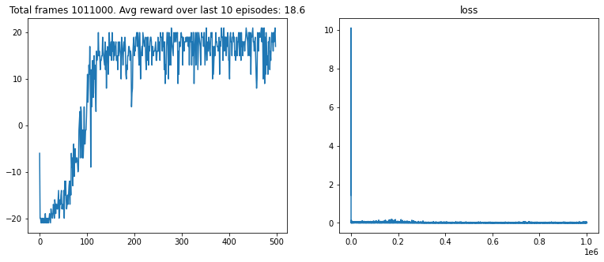

PONG: PPO GAE AGENT
Proximal Policy Optimization (PPO) with Generalized Advantage Estimation (GAE)
AGENT PERFORMANCE DEMO

Project Files & Resources
View the full implementation, including network definitions and environment wrappers, in the complete Jupyter Notebook.
View Full Jupyter Notebook {DeepRL\_pong.ipynb}(Note: Please replace the $\texttt{https://example.com/...}$ link with your actual public repository URL.)
The PPO Actor-Critic Architecture
PPO utilizes an **Actor-Critic** framework. Both the Actor (policy) and the Critic (value function) share convolutional layers for feature extraction, which is crucial for handling the raw pixel input of the Atari environment.
/**
* PPO Agent for Pong using a shared-network Actor-Critic structure.
* The model predicts both the action probabilities (Actor) and the state value (Critic).
*/
class PPOAgent {
constructor() {
// Shared Feature Extractor (e.g., CNN for Atari frames)
this.feature_extractor = this.createSharedLayers();
// Policy Head (Actor): outputs action probabilities
this.actor = this.createActorHead(this.feature_extractor);
// Value Head (Critic): outputs state value V(s)
this.critic = this.createCriticHead(this.feature_extractor);
// PPO Hyperparameters
this.GAMMA = 0.99; // Discount factor
this.LAMBDA = 0.95; // GAE decay factor
this.CLIP_EPSILON = 0.2; // PPO clipping parameter
this.EPOCHS = 4; // Optimization passes per data collection
this.MINIBATCH_SIZE = 64; // Batch size for optimization
console.log("PPO Agent initialized (TensorFlow.js simulation)");
}
/**
* Defines the structure of the shared convolutional layers.
*/
createSharedLayers() {
// ... CNN structure (similar to DQN) ...
return { outputShape: [256] };
}
/**
* Actor Head: Predicts a probability distribution over the 6 actions.
*/
createActorHead(shared_layers) {
// tf.layers.dense({ units: 6, activation: 'softmax' })
return { predict: (state) => ({ probabilities: [0.1, 0.1, 0.4, 0.4, 0.0, 0.0] }) };
}
/**
* Critic Head: Predicts the state value V(s).
*/
createCriticHead(shared_layers) {
// tf.layers.dense({ units: 1, activation: 'linear' })
return { predict: (state) => ({ value: 5.5 }) };
}
/**
* PPO Training Step (On-Policy Collection and Optimization).
*/
async learn(trajectories) {
// 1. Calculate Generalized Advantage Estimation (GAE) for all trajectories
// const advantages = calculateGAE(trajectories, this.GAMMA, this.LAMBDA);
// 2. Normalize Advantages
// 3. For K epochs, optimize the clipped objective and the value function
// for (let i = 0; i < this.EPOCHS; i++) {
// Sample mini-batches from the trajectories
// Perform PPO Policy Loss update (using the clip objective)
// Perform Value Loss update (MSE on V(s) vs returns)
// }
}
}PPO Clipped Objective and GAE
The **PPO Clipped Objective** $L^{CLIP}$ prevents overly aggressive policy updates, ensuring stability. **Generalized Advantage Estimation (GAE)** $A_t^{GAE(\gamma, \lambda)}$ provides a low-variance, low-bias estimate of the advantage function $A(s,a)$.
// 1. PPO Clipped Policy Loss ($\theta$ are current weights, $\theta_{old}$ are old weights)
// $r_t(\theta)$ is the probability ratio $\frac{\pi_{\theta}(a_t | s_t)}{\pi_{\theta_{old}}(a_t | s_t)}$
// $\hat{A}_t$ is the Advantage estimate (often GAE)
$L^{CLIP}(\theta) = \hat{\mathbb{E}}_t \left[ \min(r_t(\theta) \hat{A}_t, \text{clip}(r_t(\theta), 1-\epsilon, 1+\epsilon) \hat{A}_t) \right]$
// 2. Generalized Advantage Estimation (GAE)
// GAE is a weighted average of n-step advantage estimates (TD-residuals).
// $\delta_t = r_t + \gamma V(s_{t+1}) - V(s_t)$ (TD-residual)
$A_t^{GAE(\gamma, \lambda)} = \sum_{l=0}^{\infty} (\gamma \lambda)^l \delta_{t+l}$
// $\gamma$ is the discount factor, $\lambda$ controls the variance/bias trade-off.Jupyter Notebook Training Initialization
The following cells initialize the PyTorch models, environment, and training components for the $\texttt{PongNoFrameskip-v4}$ environment.
import torch
import torch.optim as optim
from model import PPOActorCritic // Assuming the PPO model
from wrappers import make_atari_env
from ppo_buffer import PPOMemory // Specialized memory for PPO
from utils_modif import train_ppo, test_ppo
from Param_modif import *
from IPython.display import clear_output
import matplotlib.pyplot as plt
%matplotlib inline
device = torch.device("cuda" if torch.cuda.is_available() else "cpu")
device
// Output: device(type='cuda')
env_id = "PongNoFrameskip-v4"
env = make_atari_env(env_id)
print(env.action_space)
// Output: Discrete(6)
// Output: ['NOOP', 'FIRE', 'UP', 'RIGHT', 'LEFT', 'DOWN']
model = PPOActorCritic(env.observation_space.shape, env.action_space.n).to(device)
optimizer = optim.Adam(model.parameters(), lr=0.00025)
ppo_memory = PPOMemory() // On-policy buffer
// PPO training involves collecting a batch of trajectories, then optimizing
train_ppo(env, model, optimizer, ppo_memory, device)
PPO Training Algorithm (Pseudo-code)
PPO is an on-policy method that collects full trajectories from the current policy before performing multiple optimization steps on the collected data.
Initialize Actor-Critic network $\pi_\theta, V_\phi$ with weights $\theta, \phi$.
For $k = 0, 1, 2, \dots$ (iterations):
// 1. Data Collection (On-Policy)
Collect set of trajectories $\mathcal{D}_k = \{ \tau_i \}$ by running policy $\pi_{\theta_{old}}$
for $T$ timesteps, storing $\{s_t, a_t, r_t, V_{\phi}(s_t), \log \pi_{\theta_{old}}(a_t | s_t)\}$.
// 2. Advantage Estimation (GAE)
For each $t$ in $\mathcal{D}_k$:
Calculate returns $\hat{R}_t$ (for value function update).
Calculate GAE advantages $\hat{A}_t = \sum_{l=0}^{T-t-1} (\gamma \lambda)^l \delta_{t+l}$
// 3. Optimization
Optimize policy and value function for $K$ epochs using $\mathcal{D}_k$:
For $j = 1$ to $K$ (optimization epochs):
Sample mini-batch from $\mathcal{D}_k$:
// Policy Loss (Actor)
Calculate probability ratio $r_t(\theta)$
Calculate $L^{CLIP}(\theta)$ using $\hat{A}_t$
Maximize $L^{CLIP}(\theta)$ with respect to $\theta$.
// Value Loss (Critic)
Calculate Squared Error Loss $L^{VF}(\phi) = (\hat{R}_t - V_{\phi}(s_t))^2$
Minimize $L^{VF}(\phi)$ with respect to $\phi$.
// Optional: Add Entropy Loss $L^S(\theta)$ for exploration.
Set $\theta_{old} = \theta$
Training Performance Metric (Episodic Reward)
The graph below illustrates the agent's performance by tracking the episodic reward curve over training steps.
EPISODIC REWARD HISTORY
